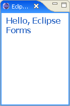
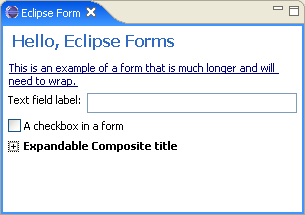

|
 Eclipse Corner Article |

Summary
Spice up your rich client with rich user experience using Eclipse Forms. Written as a thin layer on top of SWT, Eclipse Forms allow you to achieve the Web look in your desktop applications without using the embedded browser. This allows you to retain full control of the widgets in the UI and to maintain portability across all operating systems Eclipse already runs on. This article will take you from baby steps to advanced topics of the rich user interface experience of Eclipse Forms.
By Dejan Glozic, IBM Canada Ltd.
January 16, 2005
One of the fundamental features of the Eclipse platform is that applications built on top of it look, feel and smell like genuine native applications. Thanks to SWT, menus, windows, trees, tables, buttons and other widgets all feel 'right' no matter what OS or windowing system you are on. Being one of the first members of the Eclipse team, I remember the days when I could get hours of joy by playing with our prototype Eclipse code. Menus are real. Tool bars are real. Combos, text, button, check boxes, radios are all real. There is not a drawn widget in sight, all are native widgets.
For a long time, if your plug-ins contributed Eclipse user interface artifacts, they would generally fall into the following categories:
There are clear presentation rules for artifacts in these categories. We are used to seeing trees and tables in views, documents in editors and grids of simple widgets like buttons and text fields in wizards and dialogs. These rules are easy to follow and live by as long as your application is similar in principle to Eclipse SDK.
The RCP (Rich Client Platform) concept in Eclipse 3.x represents a fundamental broadening of the platform scope. It brought as a corollary an effective explosion of the problem domains. You can now build Rich client applications on top of Eclipse that have little in common with IDEs. While generic workbench parts like views and editors continue to work well, the widgets that are populating these parts in IDEs (trees, tables, text editors, etc...) may not be the best solution for this class of applications. Available since Eclipse 3.0, Eclipse Forms are designed to offer appealing alternatives.
Ironically, we developed Eclipse Forms as a solution for a concrete problem in the Eclipse SDK long before RCP existed as a concept. Developers of the PDE (Plug-in Development Environment) working on the plug-in manifest editor did not feel happy with following a Java editor paradigm of offering a color-coded, context-assisted text editor for the plugin.xml file. There is nothing wrong with Java editor in Eclipse by itself - in fact, it is very powerful and ideally suited for the task. However, it was designed for editing Java source files. In plug-in manifests, XML was used as a format to describe data at a higher level of abstraction. Editing XML by hand, even with color-coding and context assist/code completion was not perceived as the correct level of abstraction for the majority of users. In a plug-in manifest, the syntax itself is not important (yet another thing to learn). It is the data and what it represents that is important.
A good example of different ways of looking at markup is HTML authoring tools. At the source code level, all we can see are nested elements with the associated attributes. Although we see the syntax, it is hard to visualize what it really represents. A WYSIWYG view of the document can reveal a table, colors, some texts that span tables, images, etc. Working with HTML files at this level of abstraction is vastly more productive because syntax and markup are hidden in the background (which is the reason why I am typing this article on a WYSIWYG HTML authoring tool instead of hacking HTML tags).
It is easy to understand what WYSIWYG concept means for HTML documents. Since the HTML tags represent instructions for the web browser on how to compose a document from text, presentation attributes, hyperlinks and images, WYSIWYG in this context means editing the document in its final form -- as close as possible to the way it will appear in the browser. It was harder to figure out what the alternative presentation would mean for the plug-in manifest editor. Ultimately, the team made the following decisions:
Figure 1: The Plug-in manifest editor as it first appeared in Eclipse SDK 1.0. It offered a mixture SWT widgets, hyperlinks and images that could scroll when there is not enough space (as you would expect in a web browser). Note how all the widgets have the 'flat' look that was selected for less clutter and better fit in the document context.
The third point effectively spelled the birth of a plug-in that now goes by the name of Eclipse Forms. Soon after release 1.0, other developers wanted to replicate the rich user interface that appeared in PDE multi-page editors. It was finally made available as a plug-in with public APIs in Eclipse 3.0.
In the following text, we will show you what Eclipse Forms are (and what they are not) and how to use them to create rich UI with little effort.
Now that we know how Eclipse Forms came into being, it is useful to describe their mission before going into details:
Eclipse Forms is an
optional Rich Client plug-in
based on SWT and JFace that provides the support for creating
portable web-style user interfaces
across all Eclipse UI categories.
Let's look at the mission statement in more detail:
Optional Rich Client plug-in - Eclipse Forms have been rewritten in the 3.0 release to depend only on the platform UI plug-in, and no longer rely on the PDE UI plug-in. Despite they are not part of the minimal RCP layer, you can add Eclipse Forms to any RCP application. Based on SWT and JFace - Eclipse Forms were not designed to compete with or offer an alternative to SWT or JFace. The plug-in consists of a few carefully chosen custom widgets, layouts and support classes to achieve the desired effect when used with SWT and JFace. Portable web-style user interfaces -- obviously, an Eclipse Form often looks like a web page. The fact that each aspect of the form is programmatically accessible at all times makes forms powerful and attractive. Achieving the same flexibility in a browser would require extensive DOM support and often proprietary interactions. Eclipse Forms are portable, being written on top of SWT and JFace. Across all Eclipse UI categories - Eclipse Forms breaks the mode by which certain classes of widgets are be expected only in certain Eclipse UI categories (editors, views, wizards, dialogs). An Eclipse form can appear in any UI category, expanding development possibilities. The UI developers can use the most appropriate concept for the task.
Point  cannot be underestimated. When
building interfaces in Eclipse Forms, you are using SWT. There is
no Eclipse Forms button, or Eclipse Forms tree widget as an
alternative to SWT widget. Instead, you are using Eclipse Forms
support to tweak subtly the existing widget set to achieve a richer
user experience.
cannot be underestimated. When
building interfaces in Eclipse Forms, you are using SWT. There is
no Eclipse Forms button, or Eclipse Forms tree widget as an
alternative to SWT widget. Instead, you are using Eclipse Forms
support to tweak subtly the existing widget set to achieve a richer
user experience.
Eclipse Forms make these rich user interfaces possible with the following elements:
 Although nothing in the design of Eclipse Forms prevents you from
creating a form in a dialog, most of the usage scenarios have been
focused on using forms in views and editors, rather than dialog and
wizards. It is a matter of consistency -- having only a few
form-based dialogs or wizards would look very strange when all
other dialogs are 'normal'. Nevertheless, it is an
interesting area to explore in the future.
Although nothing in the design of Eclipse Forms prevents you from
creating a form in a dialog, most of the usage scenarios have been
focused on using forms in views and editors, rather than dialog and
wizards. It is a matter of consistency -- having only a few
form-based dialogs or wizards would look very strange when all
other dialogs are 'normal'. Nevertheless, it is an
interesting area to explore in the future.
It is very easy to start using Eclipse Forms in your user interfaces. You can start by adding a dependency on org.eclipse.ui.forms plug-in. We will create an Eclipse view that hosts a form and gradually fill in the content. Note that the plug-in with all the source code used in this article is available as a zip archive.
We will start playing by adding an empty form to a view:
public class FormView extends ViewPart {
private FormToolkit toolkit;
private ScrolledForm form;
/**
* The constructor.
*/
public FormView() {
}
/**
* This is a callback that will allow us to create the viewer and
* initialize it.
*/
public void createPartControl(Composite parent) {
toolkit = new FormToolkit(parent.getDisplay());
form = toolkit.createScrolledForm(parent);
form.setText("Hello, Eclipse Forms");
}
/**
* Passing the focus request to the form.
*/
public void setFocus() {
form.setFocus();
}
/**
* Disposes the toolkit
*/
public void dispose() {
toolkit.dispose();
super.dispose();
}
}
As you can see from this code snippet, it does not take much to
create a form. We start by creating an instance of a toolkit (
 ). We use the toolkit to
). We use the toolkit to  create a scrolled
form using the provided composite as a parent. We set the
create a scrolled
form using the provided composite as a parent. We set the
 title of the form. We also make sure to transfer
focus to the form when needed and dispose the toolkit when the view
is disposed.
title of the form. We also make sure to transfer
focus to the form when needed and dispose the toolkit when the view
is disposed.
When we register the view using the class shown above and launch the second Eclipse instance, the view should look like this:
 
Figure 2: A simple empty form in a view. Making the view narrower will cause the form title to wrap. Once there is no more space to fit the entire form, scroll bars will appear.
Note that we have used scrolled form because we placed it in a
view that can be resized. In the more complex situations where a
form needs to be a child in a layout, a non-scrolled version is
available. In this case, we would have called
FormToolkit.createForm() instead and let the outmost
parent worry about scrolling the overall content.
Now that we have the form view running, we can start adding some content to it. Eclipse forms have a body and we should create all the content there:
public void createPartControl(Composite parent) {
toolkit = new FormToolkit(parent.getDisplay());
form = toolkit.createForm(parent);
form.setText("Hello, Eclipse Forms");
GridLayout layout = new GridLayout();
form.getBody().setLayout(layout);
Hyperlink link = toolkit.createHyperlink(form.getBody(),
"Click here.", SWT.WRAP);
link.addHyperlinkListener(new HyperlinkAdapter() {
public void linkActivated(HyperlinkEvent e) {
System.out.println("Link activated!");
}
});
}
The body of the form is the usable space below the form title.
Since this space is a SWT Composite, it can serve as a
parent for other widgets. In the code above, we
 set the layout on the body, then
set the layout on the body, then  create a
hyperlink. The hyperlink is one of the few custom widgets that
Eclipse Forms provide. The widget allows us to
create a
hyperlink. The hyperlink is one of the few custom widgets that
Eclipse Forms provide. The widget allows us to  add a hyperlink
listener so that we can be notified when the user clicks on the
link.
add a hyperlink
listener so that we can be notified when the user clicks on the
link.
The updated view should look like this:
Figure 3: A simple form with a hyperlink
Note how hyperlink has a focus rectangle painted around it. Upon view activation, focus is transferred to the form, which passes it to the first control capable of accepting focus -- our link in this case. With the keyboard focus in the link, simply pressing the 'Enter' key would activate the link.
Form toolkit has a hyperlink group object. Each created hyperlink is added to this group object. Hyperlink groups serve several roles. They define colors -- for normal, hover and active states -- for all links in the group. They change colors of the managed links based on their state. They change underline style of the managed links based on their state. They manage cursors and show busy cursor before link listeners process the link activation, and revert it after.
You can change the default settings of the hyperlink group by
getting the object from the toolkit with
getHyperlinkGroup().
One of the design goals of Eclipse Forms was to allow the creation of common SWT controls in the editor/view content space. Since form body is a normal composite, you can use any layout and control you want inside it. However, remember that 'raw' SWT controls come with a widget background. We will now create some controls using their constructors:
layout.numColumns = 2;
GridData gd = new GridData();
gd.horizontalSpan = 2;
link.setLayoutData(gd);
Label label = new Label(form.getBody(), SWT.NULL);
label.setText("Text field label:");
Text text = new Text(form.getBody(), SWT.BORDER);
text.setLayoutData(new GridData(GridData.FILL_HORIZONTAL));
Button button = new Button(form.getBody(), SWT.CHECK);
button.setText("An example of a checkbox in a form");
gd = new GridData();
gd.horizontalSpan = 2;
button.setLayoutData(gd);
We are now using two columns and creating a label, a text field and a checkbox. The result is below:
Figure 4: A form with SWT controls created directly using their constructors
What is wrong with this picture? The background of controls we created directly matches the system dialog background, not the form background. In addition, the text field looks fine because the screen capture was taken on Windows XP. On other windowing systems, it would look out of place due to the addition of a 3D border. To fix this problem, we will create these controls using the toolkit's factory methods instead:
Label label = toolkit.createLabel(form.getBody(), "Text field label:"); Text text = toolkit.createText(form.getBody(), ""); text.setLayoutData(new GridData(GridData.FILL_HORIZONTAL)); Button button = toolkit.createButton(form.getBody(), "A checkbox in a form", SWT.CHECK); gd = new GridData(); gd.horizontalSpan = 2; button.setLayoutData(gd);
The view will now look better:
Figure 5: A form with SWT controls created using the form toolkit as a factory
Factory methods provided by the form toolkit are there for your
convenience. The toolkit is not all-inclusive --even for the SWT
widget set-- and definitely not for the custom controls that you may
have. A utility method FormToolkit.adapt(Control control,
boolean trackFocus, boolean trackKeyboard) should be used to
adapt an existing SWT control to fit into the form. Most of
the factory methods call adapt themselves.
One of the recognizable attributes of Eclipse Forms used in PDE editors was the elegant 'flat' look of the controls. All the controls used there were without 3D borders that look fine in dialogs but less appealing in editors or views. This support is built into the FormToolkit class. However, on some platform it comes at a price of some custom rendering. For example, look at this screen capture from PDE editor (version 2.1):
Figure 6: The flat look of Eclipse Forms circa Eclipse 2.1
Controls like tables, text entries, combo box etc. are rendered
with a flat one-pixel border. These borders do not come from the
controls themselves (SWT.BORDER style is not used). Instead -- if
instructed -- the toolkit will add itself as a paint listener to
each control's parent, and draw borders around controls during
paint events. To make this happen, you need to call the toolkit
method paintBordersFor(parent) for each composite
where you created controls like text, tree, table etc. Note that
one call per parent is enough: there is no need to make a call for
each control of this type.
The Form toolkit knows which controls require a custom border. However, you may create a new one that also needs a border that is not on the list. You can give a hint to the toolkit by adding the following code:
Control myControl = new MyControl(parent); myControl.setData(FormToolkit.KEY_DRAW_BORDER, FormToolkit.TEXT_BORDER); // or myControl.setData(FormToolkit.KEY_DRAW_BORDER, FormToolkit.TREE_BORDER); toolkit.paintBordersFor(parent);
As you can see from the picture above, 'structural' controls like trees and tables have a border style different from text areas and you can choose which one to render for your control. Note that this is not needed for controls created using toolkit's factory methods.
 Since
Eclipse 3.0 and on Windows XP, no border rendering is done when the
file
Since
Eclipse 3.0 and on Windows XP, no border rendering is done when the
file javaw.exe.manifest file is present in the
Java virtual machine bin folder (I took all the screen shots in this article on Windows XP).
The presence of this file -- you can download
one from the
SWT home page -- instructs the toolkit to use XP skins for
native widgets. With XP skins, controls like text, table and tree
are already flat and there is no need to adjust the look. For
your code to be portable, you should always call
paintBordersFor(Composite), and let the toolkit choose
what to do depending on the windowing system.
Eclipse Forms offer two new layouts in addition to the base SWT layouts.
These layouts extend the SWT Layout base class and
can be used on any SWT composite, but are typically used in
conjunction with Eclipse Forms.
Now that we know how to populate the form, let's throw it a curve. We will change the hyperlink text to be much longer:
link.setText("This is an example of a form that is much longer "+
"and will need to wrap.");
Let's see the result on screen:
Figure 7: A form laid out using
GridLayout
What happened? Remember that we are using
GridLayout. When it asked the link control to compute
its size, it gave it the size needed to render the text in one long
line. Although we instructed the control to wrap, it did not
matter because GridLayout requires that a control
return its size in isolation. The link itself -- as well as other
SWT controls like Label -- is capable of computing the
height given its width if you pass the width instead of
SWT.DEFAULT in computeSize, but
GridLayout is not passing the width as an argument.
What we need is a different layout algorithm that works more
like HTML tables. We want the content to try to fit in the provided
client area, and grow vertically to compensate. Eclipse Forms
provide an alternative layout for just such a purpose called
TableWrapLayout. There are many similarities between
GridLayout and TableWrapLayout. Both
organize parent's children in grids. Both have layout data
that instructs the layout how to treat each control. Both can
accept hints on which control should grab excess space etc.
However, they fundamentally differ in the approach to the
layout. TableWrapLayout starts with columns. It
computes minimal, preferred and maximum widths of each column and
uses this information to assign excess space. It also tries to be
fair when dividing space across columns so that there is no excess
wrapping of some controls.
It is possible to mix GridLayout and
TableWrapLayout but the branch of widgets tree where
GridLayout is used is the one where wrapping stops.
This is quite acceptable if you do not want it to wrap,
typically if the composite contains controls that cannot wrap
anyway, like text, buttons, trees etc... However, you should have an
un-broken path from the form body to each text control that needs
to wrap.
Let's rework our example to use TableWrapLayout
(with changes highlighted):
public void createPartControl(Composite parent) {
toolkit = new FormToolkit(parent.getDisplay());
form = toolkit.createForm(parent);
form.setText("Hello, Eclipse Forms");
TableWrapLayout layout = new TableWrapLayout();
form.getBody().setLayout(layout);
Hyperlink link = toolkit.createHyperlink(form.getBody(),"Click here.", SWT.WRAP);
link.addHyperlinkListener(new HyperlinkAdapter() {
public void linkActivated(HyperlinkEvent e) {
System.out.println("Link activated!");
}
});
link.setText("This is an example of a form that is much longer and will need to wrap.");
layout.numColumns = 2;
TableWrapData td = new TableWrapData();
td.colspan = 2;
link.setLayoutData(td);
Label label = toolkit.createLabel(form.getBody(), "Text field label:");
Text text = toolkit.createText(form.getBody(), "");
td = new TableWrapData(TableWrapData.FILL_GRAB);
text.setLayoutData(td);
Button button = toolkit.createButton(form.getBody(), "A checkbox in a form", SWT.CHECK);
td = new TableWrapData();
td.colspan = 2;
button.setLayoutData(td);
}
We used the same concepts that for GridData. Some of
the variables have different names (for example,
colspan and rowspan, align
and valign are taken from HTML TABLE attributes), but
you are doing the same thing -- creating a grid with two columns
where link and button span two columns. Since margins are the same
as in GridLayout, the result will look similar except
the link will now wrap:
Figure 8: A form laid out using
TableWrapLayout
One of the main differences between TableWrapLayout
and GridLayout is that with the former you should stop
thinking about the vertical dimension. In GridLayout,
you would typically let the 'rigid' controls assume their
natural positions and sizes and let 'flexible' controls
(text, tree and table) grab horizontal and/or vertical excess space.
In contrast, TableWrapLayout works top-down and when
it places all the controls, its work is complete. The concept of grabbing
excess space still exists in the horizontal dimension (as shown
above). However, vertically you can only choose to FILL the cell in
case it is taller than the control, or pick TOP, MIDDLE or BOTTOM
vertical alignment.
You may notice one thing that may seem contradictory to the
previous claim: TableWrapData still has
grabVertical variable. However, the variable is here
for a distinct purpose: when a fixed height control spans
multiple rows, its height will create a local condition where vertical
dimension is known, and controls in the spanned cells need to
divide the extra space between them.
In order to have good results with TableWrapLayout,
ensure that controls that can wrap have the appropriate style bit
(SWT.WRAP). Composite custom controls provided by
Eclipse Forms are wrap-enabled out of the box. This is achieved by
using internal layouts that implement ILayoutExtension
interface:
public interface ILayoutExtension {
/**
* Computes the minimum width of the parent. All widgets capable of word
* wrapping should return the width of the longest word that cannot be
* broken any further.
*
* @param parent the parent composite
* @param changed <code>true</code> if the cached information should be
* flushed, <code>false</code> otherwise.
* @return the minimum width of the parent composite
*/
public int computeMinimumWidth(Composite parent, boolean changed);
/**
* Computes the maximum width of the parent. All widgets capable of word
* wrapping should return the length of the entire text with wrapping
* turned off.
*
* @param parent the parent composite
* @param changed <code>true</code> if the cached information
* should be flushed, <code>false</code> otherwise.
* @return the maximum width of the parent composite
*/
public int computeMaximumWidth(Composite parent, boolean changed);
}
TableWrapLayout implements this interface itself,
which allows it to handle cases where composites with this layout
are children of the composite that is laid out. The additional two
methods allow it to compute the two extreme cases - the absolute
minimum width and the maximum width if all the controls are spread
as wide as possible. The difference between the two allows the
algorithm to distribute extra space fairly between columns to
minimize excess wrapping.
Let's take a closer look at space distribution. We will comment the code we wrote so far in the view and replace it with the following:
layout.numColumns = 3; Label label; TableWrapData td; label = toolkit.createLabel(form.getBody(), "Some text to put in the first column", SWT.WRAP); label = toolkit.createLabel(form.getBody(), "Some text to put in the second column and make it a bit "+ "longer so that we can see what happens with column "+ distribution. This text must be the longest so that it can "+ "get more space allocated to the columns it belongs to.", SWT.WRAP); td = new TableWrapData(); td.colspan = 2; label.setLayoutData(td); label = toolkit.createLabel(form.getBody(), "This text will span two rows and should not grow the column.", SWT.WRAP); td = new TableWrapData(); td.rowspan = 2; label.setLayoutData(td); label = toolkit.createLabel(form.getBody(), "This text goes into column 2 and consumes only one cell", SWT.WRAP); label.setLayoutData(new TableWrapData(TableWrapData.FILL_GRAB)); label = toolkit.createLabel(form.getBody(), "This text goes into column 3 and consumes only one cell too", SWT.WRAP); label.setLayoutData(new TableWrapData(TableWrapData.FILL)); label = toolkit.createLabel(form.getBody(), "This text goes into column 2 and consumes only one cell", SWT.WRAP); label.setLayoutData(new TableWrapData(TableWrapData.FILL_GRAB)); label = toolkit.createLabel(form.getBody(), "This text goes into column 3 and consumes only one cell too", SWT.WRAP); label.setLayoutData(new TableWrapData(TableWrapData.FILL));
This code creates a number of wrapping labels with text of
variable length. Some labels span columns, some span rows. To make
the test easier, we will  set the form background to
widget background so that cells will be easy to spot. When we run
the example, we will get the following:
set the form background to
widget background so that cells will be easy to spot. When we run
the example, we will get the following:
Figure 9: Excess space distribution in
TableWrapLayout
The key in space distribution is that the difference between control minimum and maximum width is compared. The greater the difference, the greater allocation of excess width will be for the column. Excess width is any width greater than the width needed to fit all the controls with their minimum widths taken into account. Notice how column 3 is slightly wider than column 2 because text in column 2 is somewhat longer. The overall goal is to avoid excessive empty space in cells. If you want to read more about the theory behind this layout algorithm, go to W3C recommendations for HTML table auto-layout.
Another Eclipse Forms custom layout is a variation of SWT
RowLayout. If we configure RowLayout to
place children vertically -- in columns-- and to make all controls
have the same width within a column, we would get several columns,
depending on the width of controls. However, the last column would
typically not be completely filled -- depending on the number of
controls. When placed in a form, we would again get all the
controls in one column because RowLayout cannot do
'vertical' wrapping. If we use GridLayout
instead, we would have to choose the number of columns up front and
live with the choice.
There are situations in more complex forms where we want the
number of columns to be adaptive. In other words, we would like the
number to change depending on the width of the form -- use more
when possible, drop the number down as the width decreases. We
would also like to fill the form area equally like a newspaper
layout, with all the columns roughly the same height. All this can
be achieved with ColumnLayout.
Compared to TableWrapLayout,
ColumnLayout is much simpler. Hardly any configuration
is needed. The only choice you need to make is the range of columns
you want to have (default is 1 to 3). The following example shows a
form with a large number of sections (we will talk about sections
later) using ColumnLayout. Initially, there is enough
space to arrange the sections in two columns.
When we make the editor narrower, the layout arranges the sections in only one column:
Figure 10: Sections arranged in columns
using ColumnLayout. The layout started with two
columns but dropped to one when there was not enough space to fit
all the sections.
Eclipse Forms provide four complex custom controls that can help you build rich looking UI: expandable composite, section, image hyperlink and form text. Let's look closely at each of them.
A common theme in sleek web pages is the ability to collapse a
portion of the page content using a toggle control. Eclipse Forms
offer such a control: ExpandableComposite.
ExpandableComposite ec = toolkit.createExpandableComposite(form.getBody(),
ExpandableComposite.TREE_NODE|
ExpandableComposite.CLIENT_INDENT);
ec.setText("Expandable Composite title");
String ctext = "We will now create a somewhat long text so that "+
"we can use it as content for the expandable composite. "+
"Expandable composite is used to hide or show the text using the "
"toggle control";
Label client = toolkit.createLabel(ec, ctext, SWT.WRAP);
ec.setClient(client);
td = new TableWrapData();
td.colspan = 2;
ec.setLayoutData(td);
ec.addExpansionListener(new ExpansionAdapter() {
public void expansionStateChanged(ExpansionEvent e) {
form.reflow(true);
}
});
The composite accepts a number of styles that control its appearance and behavior. Style TREE_NODE will create the toggle control used in a tree widget for expanding and collapsing nodes, while TWISTIE will create a triangle-style toggle. Using EXPANDED will create the control in the initial expanded state. If style COMPACT is used, control will report width in the collapsed state enough to fit in the title line only (i.e. when collapsed, it will be as compact horizontally as possible). Finally, CLIENT_INDENT will indent the client to align with the title (otherwise, client will be aligned with the toggle control).
ExpandableComposite is responsible for rendering
the toggle control and the title. The client control to expand or
collapse must be a direct child of the expandable composite.
We needed to add expansion listener to the control and 'reflow' the form on the state change. This is because expansion causes changes in expandable composite size, but the change will not take effect until the next time the parent is laid out (hence the need to force it). In general, every time you do something that causes the layout of the form to be invalid, you need to 'reflow' the form. 'Reflowing' the form will reposition the controls according to the new sizes and update the scroll bars.
Our view now looks like this:

Figure 11: An example of the expandable composite in the collapsed state
When you click on the '+' sign or on the title itself, composite expands to reveal the client:
Figure 12: An example of the expandable composite in the expanded state
The expandable composite uses
an internal layout implementing Eclipse Forms ILayoutExtension. Therefore you can add it to a parent that uses
TableWrapLayout, as we did in the example above.
One of the most versatile custom controls in Eclipse Forms (and
seen in all PDE editors) is Section. It extends the
expandable composite and introduces the following concepts:
The code is similar to the expandable composite code example:
Section section = toolkit.createSection(form.getBody(),
Section.DESCRIPTION|Section.TITLE_BAR|
Section.TWISTIE|Section.EXPANDED);
td = new TableWrapData(TableWrapData.FILL);
td.colspan = 2;
section.setLayoutData(td);
section.addExpansionListener(new ExpansionAdapter() {
public void expansionStateChanged(ExpansionEvent e) {
form.reflow(true);
}
});
section.setText("Section title");
section.setDescription("This is the description that goes "+
below the title");
Composite sectionClient = toolkit.createComposite(section);
sectionClient.setLayout(new GridLayout());
button = toolkit.createButton(sectionClient, "Radio 1", SWT.RADIO);
button = toolkit.createButton(sectionClient, "Radio 2", SWT.RADIO);
section.setClient(sectionClient);
This time, we used the TWISTIE toggle style, added the description and asked for the title bar to be painted. The view now looks like this:
Â
Figure 13: An expandable section with a painted title bar and a description
Image hyperlink is a subclass of Hyperlink that
adds an image before the link text. This combination is so common
that it just made a lot of sense to make one control out of it and
save on widgets. The control can be used as an image link only
(when no text is set), or as a combination of link and image.
Images for normal, hover and active (selected) state can be set.
The following is an example of a rich user experience that uses image hyperlinks:
Figure 14: A form taken from one of the Eclipse Welcome pages (this is a fallback presentation used for the cases when embedded browser creation fails)
Using the combination of labels, hyperlinks, images and
TableWrapLayout, it is possible to create complex and
powerful forms. However, there are some things that are hard to do.
Consider the following example from the PDE manifest editor:
Figure 15: An example of a complex Eclipse form that mixes wrapped text, images and hyperlinks
Notice how images, hyperlinks and text snippets are mixed together. This is very hard using separate label and hyperlink widgets. To remedy the problem, Eclipse Forms plug-in provides a very rudimentary text control that can do the following:
In all the modes, form text control is capable of rendering either a string or an input stream.
FormText formText = toolkit.createFormText(form.getBody(), true); td = new TableWrapData(TableWrapData.FILL); td.colspan = 2; formText.setLayoutData(td); String text = "Here is some plain text for the text to render."; formText.setText(text, false, false);
Second argument set to false means that we will
not bother to parse the tags, and the third that we will not try
to expand URLs if found.
Now we will add a hyperlink to the text and turn the third
argument into true:
FormText formText = toolkit.createFormText(form.getBody(), true); td = new TableWrapData(TableWrapData.FILL); td.colspan = 2; formText .setLayoutData(td); String text = "Here is some plain text for the text to render; "+ this text is at http://www.eclipse.org web site."; formText .setText(text, false, true);
When we look at our view, it now looks like this:
Figure 16: Form text control with a URL automatically converted into a hyperlink
The URL has been converted into a link. The link is part of the
wrapped text - we did not have to create a separate
Hyperlink control and try to sandwich it between the
two labels.
Since form text control can render hyperlinks, it accepts the same hyperlink listeners we used before. When created by the toolkit, the form text will use the hyperlink settings from the hyperlink group that belongs to the toolkit.
The most powerful use of the form text control is when formatting tags are added to the text. The expected root tag is 'form'. It can have one or more children that can either be <p> or <li>. Either of these can have normal text, text between <b> or <span> tags, images and links. Images are declared using <img href="image key"/> (no content), while links are expressed using <a href="href">text</a>.
Some of the tags mentioned above have additional attributes. Tag <a> can accept nowrap='true' to block the link from being wrapped into the new line. Tag <p> can have attribute vspace='false' (true by default) that adds additional space between paragraphs when set to 'true'. Tag <li> has more attributes:
Tags that affect appearance of the normal text are <b> (works as expected), and <span>. The latter allows you to change font and/or color of the text within the tag. Finally, soft line breaks can be added using <br/> tag.
 Since Eclipse 3.1, it is possible to place an SWT control that is a
child of the form text in the markup. The new element
'control' accepts attribute 'href' that is a
key to the Control object set using
Since Eclipse 3.1, it is possible to place an SWT control that is a
child of the form text in the markup. The new element
'control' accepts attribute 'href' that is a
key to the Control object set using
FormText.setControl(String key, Control control).
Optionally, attribute "fill" can be set to
true to make the control fill the entire width of the
text. Form text is not responsible for creating or disposing
controls, it only places them relative to the surrounding text.
Similar to <img>, vertical position of the control relative
to the surrounding text can be set using the 'align'
attribute.
How does all this work in practice? Let's make data text that will use all of these tags together:
StringBuffer buf = new StringBuffer();
buf.append("<form>");
buf.append("<p>");
buf.append("Here is some plain text for the text to render; ");
buf.append("this text is at <a href=\"http://www.eclipse.org\" "+
"nowrap=\"true\">http://www.eclipse.org</a> web site.");
buf.append("</p>");
buf.append("<p>");
buf.append("<span color=\"header\" font=\"header\">"+
"This text is in header font and color.</span>");
buf.append("</p>");
buf.append("<p>This line will contain some <b>bold</b> and "+
"some <span font=\"code\">source</span> text. ");
buf.append("We can also add <img href=\"image\"/> an image. ");
buf.append("</p>");
buf.append("<li>A default (bulleted) list item.</li>");
buf.append("<li>Another bullet list item.</li>");
buf.append("<li style=\"text\" value=\"1.\">A list item with text.</li>");
buf.append("<li style=\"text\" value=\"2.\">Another list "+
item with text</li>");
buf.append("<li style=\"image\" value=\"image\">List item with "+
"an image bullet</li>");
buf.append("<li style=\"text\" bindent=\"20\" indent=\"40\" value=\"3.\">"+
"A list item with text.</li>");
buf.append("<li style=\"text\" bindent=\"20\" indent=\"40\" value=\"4.\">"+
"A list item with text.</li>");
buf.append("<p> leading blanks; more white \n\n new "+
"lines <br/> \n more <b> bb </b> white . </p>");
buf.append("</form>");
FormText formText = toolkit.createFormText(form.getBody(), true);
formText.setWhitespaceNormalized(true);
td = new TableWrapData(TableWrapData.FILL);
td.colspan = 2;
formText.setLayoutData(td);
formText.setImage("image", FormArticlePlugin.getDefault().
getImageRegistry().get(FormArticlePlugin.IMG_SAMPLE));
formText.setColor("header", toolkit.getColors().
getColor(FormColors.TITLE));
formText.setFont("header", JFaceResources.getHeaderFont());
formText.setFont("code", JFaceResources.getTextFont());
formText.setText(buf.toString(), true, false);
formText.addHyperlinkListener(new HyperlinkAdapter() {
public void linkActivated(HyperlinkEvent e) {
System.out.println("Link active: "+e.getHref());
}
});
One common theme that can be observed is that the widget itself is not responsible for loading images, fonts, resolving links or colors. This is not a browser and it is much better to separate concerns and simply assign images and colors managed elsewhere. Both links and images simply have 'href' attribute to reference them. For links, the value of this attribute will be provided in the hyperlink event when listeners are notified. Images need to be registered with the text control using the matching 'href' key. This way, the control does not need to worry about loading the images - it has them in the hash table and can render them immediately.
A similar approach has been used for colors and fonts. Colors
are already handled by the toolkit, so you can allocate as many as
you want using a unique key and RGB values by calling
toolkit.getColors().createColor(String key, RGB rgb).
What is left is to set all the colors referenced in the
'span' tag so that the control will be able to use them
during rendering.
When the code above is executed, the view looks like this:
Figure 17: Form text rendered from the XML markup
If we expand the section and the expandable composite, and make the window narrower, the form still holds and everything wraps perfectly:
Figure 18: The sample view made taller and narrower
Although the image above is very promising, it is very important to contain excitement. A 'prime directive' of the form text control is:
"Form text control is not, nor will it ever be, a web browser"
It is very easy to spot limitations of the control. Tags within list items or paragraphs cannot be nested. Bold is supported, but not italic (although any font can be set and associated via the 'span' tag). Attributes for vertical alignment of text with respect to images are missing. List support is decidedly low level. There is no BIDI support.
Another important limitation to consider is performance. Form text is neither a performance nor memory hog, but it was written to be small and lean, not powerful. For that reason, it does not have sophisticated painting routines, dirty region management etc. These routines are cost-effective when the control owns the entire window and must be scalable. In contrast, form text is best suited for short snippets of tagged text that are mixed with other controls on a form. This way, the control is one of several children in the parent, allowing native dirty region management from the OS to handle repaints. The best results in Eclipse forms are achieved with a mixture that is similar to our example above.
 Performance and painting of the form text widget has been improved
in Eclipse 3.1 and it can now handle more content without
performance degradation. For example, the new Help view is using
form text widget for rendering hundreds of images and search hits.
Nevertheless, the usage guidelines outline above still stand.
Performance and painting of the form text widget has been improved
in Eclipse 3.1 and it can now handle more content without
performance degradation. For example, the new Help view is using
form text widget for rendering hundreds of images and search hits.
Nevertheless, the usage guidelines outline above still stand.
If you have a problem with the form text limitations, you should consider alternatives:
StyledText (used by
styled text editors like Java editor in Eclipse)org.eclipse.swt.browser.Browser. Embedded web
browser works on most platforms and will give you full HTML
support.What this widget is for is to provide for modest text formatting
in combination with TableWrapLayout and other controls
in a form. The power lies in the fact that you have full access to
every control - a kind of direct access that you can only achieve
in a browser if you use proprietary DOM access mechanisms. In
contrast, Eclipse Forms are portable - they run everywhere SWT
runs.
To conclude, use the form text widget:
In contrast, use embedded web browser:
As usual in the real-world development, there is a chasm between simple, happy examples that get you started and real code shipped in products. This section covers aspects of Eclipse Forms that are employed in production Eclipse code. You do not need to use them right away, but chances are you will recognize their advantages as your plug-in grows in complexity. In the following text, we will address color and toolkit management, managed forms, master/details block and multi-page editors.
When using forms in a non-trivial way, it is important to share as much as possible to conserve resources. For this reason, color management should be separated from the toolkit when there is more than one form to handle.
Of course, it is possible to create one toolkit per form, but that is too wasteful if there are many forms. Instead:
FormColors) per
plug-in. When creating the toolkit, pass the color manager to
the toolkit. The toolkit will know that the colors are shared
and will not dispose them.
JFaceResources predefined fonts. Between default,
'banner' and 'header' fonts, you can
accomplish a lot. Using many fonts is very confusing for the
user, and if you do manage your own, you must ensure
alternatives across platforms. The JFace fonts are guaranteed
to work on all the platforms Eclipse ships on.
Managed forms are wrappers that add life cycle management and
notification to form members. A managed form is not a form by
itself. It has a form and accepts registration of
IFormPart element. For each IFormPart, it
manages events like dirty state, saving, commit, focus, selection
changes etc. In order to reach to the wrapped form widget, call the
'getfForm()' method.
Not every control on the form needs to be a form part. It is
better to group a number of controls and implement
IFormPart interface for the group. Section is a
natural group and Eclipse Form provides SectionPart
implementation. It implements the interface and contains a
Section instance (either created outside and passed
into the constructor, or created in the part itself).
'Master/Details' is a pattern used throughout the UI world. It consists of a list or a tree ('master') and a set of properties ('details') driven by the selection in the master. Eclipse Forms provide the implementation of the pattern as a useful building block with the following properties:
The idea of master/details block is to create a tree or a table section that fires the selection notification via the managed form. If the details part can handle the selected object, it should switch to the page for it and display properties. When building on top of the provided master/details block, subclasses should:
We will show how this looks in practice using the source code that accompanies this article. It creates a table for the master part and hooks a few dummy objects of two distinct types. Two details pages are registered to handle selections of these types. Pages can contain any number of controls - they are created on demand in the provided parent. The details area scrolls separately from the master area.
This part can now be used anywhere, but in this example it was
placed inside an editor. Two distinct object types were used
(TypeOne and TypeTwo), and their classes
were used directly as keys (other mapping between details pages and
objects are possible). Details pages registered with the Details
part need to implement IDetailsPage interface.
The page is first initialized with the managed form to get
access to the toolkit and other objects. It is then asked to create
contents in the provided parent. It should also set focus on the
first control when asked, be able to refresh, commit, dispose and
react to the input changes. As long as objects selected in the
master part are of a compatible type, the page will stay visible
and inputChanged will be called.
Let's see how all this looks in practice:
Figure 19: An example of a master/details block in horizontal orientation hosted in an editor
An instance of TypeOne object is selected in the
master part. The appropriate page for the type is loaded in the
details part. The page can contain any number of controls
introduced elsewhere in this article. The ratio of parts on the
page can be changed by scrolling the sash (visible when mouse goes
over the area between the parts). Also note two actions in the
upper-right corner of the form - this is the form tool bar. In this
case, two radio buttons were contributed to control orientation of
the part (horizontal or vertical).
If we change the orientation and select one of the
TypeTwo instances, we get into this state:
Figure 20: The same block in vertical orientation and with a different element type selected
Orientation is now vertical, and a different details page is shown for the type.
It is possible to register a detail page provider instead of registering pages up front. This allows dynamic resolution of the details page for the selected object. It is particularly important for cases when different pages are needed for objects of the same type depending on their states.
It was a long way to get to this topic, yet PDE multi-page editors were the first to spark interest in Eclipse Forms. Today, multi-page editors still represent the most common use case of the technology, even though it now starts to appear in other places.
Eclipse Forms are designed to work in a variety of settings. For this reason, the plug-in cannot make assumptions on the types of editor inputs your editor can receive. A number of concepts employed in PDE UI cannot be used here because without knowing about the editor input in more detail, it is hard to provide a set of reusable classes. Nevertheless, Eclipse Forms provide the basic support for multi-page editors, which you can build on.
You should start building an Eclipse Forms multi-page editor by
extending FormEditor:
public class SimpleFormEditor extends FormEditor {
public SimpleFormEditor() {
}
protected FormToolkit createToolkit(Display display) {
// Create a toolkit that shares colors between editors.
return new FormToolkit(ExamplesPlugin.getDefault().
getFormColors(display));
}
protected void addPages() {
try {
addPage(new FreeFormPage(this));
addPage(new SecondPage(this));
addPage(new ThirdPage(this));
addPage(new MasterDetailsPage(this));
addPage(new PageWithSubPages(this));
}
catch (PartInitException e) {
//
}
}
public void doSave(IProgressMonitor monitor) {
}
public void doSaveAs() {
}
public boolean isSaveAsAllowed() {
return false;
}
A very simple way to get started is to create pages and add them
as above. Each page needs to implement FormPage and
override createFormContent(IManagedForm managedForm).
Since there is already a managed form in each page,
you should create contents in that enclosed form and register
any form part that needs to be part of the managed life cycle.
In addition to form pages, you can add one or more text editors
as a raw source alternative to the GUI pages. For this, you should
call addPage(IEditorPart, IEditorInput
input) method in the super class.
The source code that comes with this article contains an example of a multi-page editor suitable for inclusion in an RCP application because it does not have any dependencies on IDE plug-ins.
Once you launch another Eclipse application, customize the perspective by checking the following checkbox in the test Eclipse window:
Window>Customize Perspective...>Commands>Eclipse Forms Article
This will add a menu to the menu bar called 'Form Article Editors'. The menu contains only one action - 'Simple Form Editor'. The action will open the editor. It has the following pages:
Figure 21: A multi-page editor page with a free-flowing text
The first page contains a page with a TableWrapLayout
and some sample content including a FormText widget. The
page content is free-form and will wrap and flow top to
bottom.
In contrast, the second page contains 'stretchy' controls -- two
table viewers -- that consume all the excess space on the page. Since
the controls can scroll themselves, a
GridLayout is used. Several PDE editor pages follow this pattern.
Figure 22: A multi-page editor page with sections and tables.
The third page (Flow Page) was shown before in the
ColumnLayout section. It demonstrates how to
use this layout to adjust to the available space.
Master/Details sections are also shown above.
The last page shows how to embed aCTabFolder in
order to add another dimension to a form. In this particular example, the
actual content is not switched -- there is only one text control --
but its content is loaded from different objects depending on the
selected tab.
Figure 23: A multi-page editor page with nested tabs
There are many ways to write a form-based multi-page editor. It depends on the type of content you are editing and the proficiency of your users. You can approach it in two ways:
Creating a quality multi-page editor with mixed GUI and source pages has its challenges. Accepting that users will switch pages frequently requires a good model of the underlying content. The model should be directly tied to the underlying document(s) to stay in sync when users edit the raw text directly and when they change it structurally through the forms pages. Also, do not forget indirect changes caused by other workbench actions while the editor is open.
For ideas on how to do this, see the source code of PDE editors (org.eclipse.pde.ui plug-in) from the Eclipse CVS repository.
The goal of this article was to introduce you to a great way to create powerful user interfaces in Eclipse 3.x. Eclipse Forms is neither a competing widget toolkit that you need to choose over SWT, nor does it make the embedded HTML browser widget obsolete. Instead, it is a carefully written extension of SWT that allows you to create surprisingly rich user interfaces in Eclipse while retaining the portability of SWT. In simple cases, it can also be a lightweight alternative to the SWT embedded browser widget. When used within its limitations, Eclipse Forms can spice up your applications and allow you to introduce a familiar Web-like metaphor.
To run the example or view the source code for this article, go through the following steps: